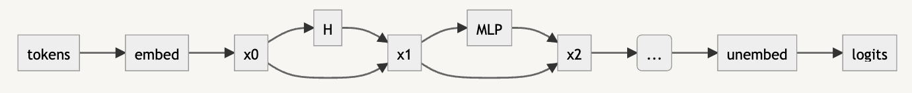

Brief Notes on Transformers
Sep 26, 2022 08:21 · 719 words · 4 minute read
(Cross-posted from the AI Alignment Forum)*
*These are just some notes I wrote while reading about transformers, which I thought might be a useful reference to others. Corrections welcome.
Overview of Transformers
Many transformer models have the following architecture:
Data flows as follows:
- We take tokens as inputs and pass them through an embedding layer. The embedding layer outputs its result into the residual stream (x0). This has dimension (C,E), where C is the number of tokens in the context window and E is the embedding dimension.
- The residual stream is processed by the attention mechanism (H) and the result is added back into the residual stream (i.e. x1 = H(x0) + x0).
- The residual stream is processed by an MLP layer (MLP) and the result is added back into the residual stream (i.e. x2 = MLP(x1) + x1).
- Steps (2) and (3) together define a “residual block”. The body of the transformer is formed of a stack of these blocks in series.
- After the final residual block, we apply an unembedding transformation to produce logits, which represent the relative probabilities of different output tokens.
Attention Mechanism
The attention mechanism (H) is divided into multiple attention heads $h_j$, which act in parallel. That is,
$$ H(x) = \sum_j h_j(x) $$
Note that this decomposition is only useful if attention heads are non-linear. Fortunately they are! Each attention head is of the form
$$ h_{ij}(x) = \sum_{kl} A_{ik}(x) S_{jl} x_{kl} $$
That is, $A_{ik}(x)$ mixes across tokens (which is the first index of $x$) and $S_{jl}$ transforms each token in parallel. Another way we could have written this is
$$ h(x) = A(x)\cdot x \cdot S $$
The matrix $S$ is also written in more common notation as $W_O W_V$, which are sometimes called the output and value weights. In general though $S$ is just some low-rank matrix that we learn. $S$ has shape (E,E) because it transforms in the embedding space.
The matrix $A$ is where the nonlinearity of attention comes in. This is given by
$$ A=\mathrm{softmax}(x Y x^T) $$
where $Y$ is written in more common notation as $W_Q^TW_K/d_k$, which are sometimes called the query and key weights. The dimension $d_k$ is the dimension of the output of $W_K$, and so is the rank of $Y$. As with $S$, $Y$ is just some low-rank matrix that we learn. The softmax acts on the whole matrix.
MLP Layer
The MLP (multilayer perceptron) layer processes the residual stream using the same MLP for each token index. That is, there is no communication between tokens in the MLP layer. All this layer does is transform in the embedding space.
Positional Encodings
A quirk of the attention mechanism is that it is covariant with respect to shuffling the token index. That is, if $P$ is a permutation matrix then
$$ h(P x) = P h(x) $$
To see this, we expand the left-hand side:
$$ h(Px) = A(Px) \cdot Px \cdot S = \mathrm{softmax}((Px)Y(Px)^T)\cdot (Px) \cdot S $$
The permutations don’t change any of the values inside the softmax, so they can be pulled outside:
$$ = P \mathrm{softmax}(x Y x^T) P^T P x S $$
The transpose of a permutation matrix is its inverse, so $P^T P = I$ and
$$ h(P x) = P h(x) $$
Similarly, the MLP layer acts on each token individually and so doesn’t know anything about their orderings.
What this means is that there is no information about token ordering in the transformer unless we put it there in the embedding space. This is what positional encodings do.
A typical positional encoding is given by adding a position-dependent vector to the embedding of each token. A common choice is
$$ e_{k,j<E/2}=\sin(k/N^{2j/E})$$
$$e_{k,j\geq E/2}=\cos(k/N^{2(j-d/2)/E}) $$
where $k$ is the token index in the context window and $j$ indexes the embedding space. Here $N > C$ so that this is not a periodic function of $k$. The reason this choice is common is that there is a linear transformation for shifting $k \rightarrow k+ 1$, identical across all $k$, which makes it easy for the model to learn to compare adjacent tokens. If this is not apparent note that pairs of $j$ offset by $d/2$ give a representation of a complex number $e^{ik/N^{2j/E}}$, and we can increment $k$ by multiplying by a fixed diagonal operator $e^{i/N^{2j/E}}$.